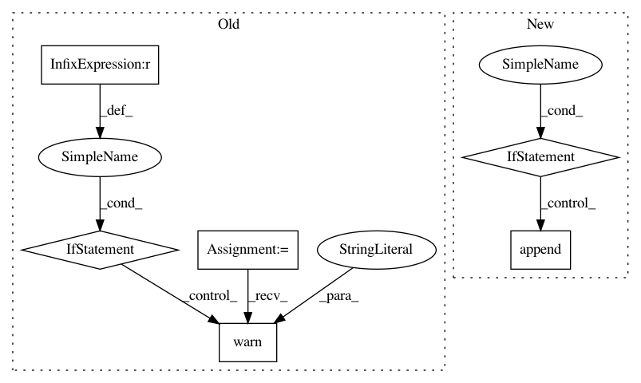

432331c2ea292f2f8b756901ea3c8bda04817ec5,autosklearn/estimators.py,AutoMLClassifier,_process_target_classes,#AutoMLClassifier#Any#,567
Before Change
def _process_target_classes(self, y):
y = np.atleast_1d(y)
if y.ndim == 2 and y.shape[1] == 1:
warnings.warn("A column-vector y was passed when a 1d array was"
" expected. Please change the shape of y to "
"(n_samples,), for example using ravel().",
sklearn.utils.DataConversionWarning, stacklevel=2)
if y.ndim == 1:
// reshape is necessary to preserve the data contiguity against vs
// [:, np.newaxis] that does not.
y = np.reshape(y, (-1, 1))
After Change
_classes = []
_n_classes = []
if self._n_outputs == 1:
classes_k, y = np.unique(y, return_inverse=True)
_classes.append(classes_k)
_n_classes.append(classes_k.shape[0])
else:
for k in range(self._n_outputs):
classes_k, y[:, k] = np.unique(y[:, k], return_inverse=True)
_classes.append(classes_k)
_n_classes.append(classes_k.shape[0])
self._n_classes = np.array(_n_classes, dtype=np.int)
return y, _classes, _n_classes
In pattern: SUPERPATTERN
Frequency: 3
Non-data size: 6
Instances
Project Name: automl/auto-sklearn
Commit Name: 432331c2ea292f2f8b756901ea3c8bda04817ec5
Time: 2017-10-20
Author: feurerm@informatik.uni-freiburg.de
File Name: autosklearn/estimators.py
Class Name: AutoMLClassifier
Method Name: _process_target_classes
Project Name: Qiskit/qiskit-aqua
Commit Name: f361f196706b37a067069aae271997a3a6218d06
Time: 2019-08-26
Author: chenrich@us.ibm.com
File Name: qiskit/aqua/algorithms/many_sample/eoh/eoh.py
Class Name: EOH
Method Name: __init__
Project Name: ilastik/ilastik
Commit Name: 9418883d418ecccd7fe5da4dddffdc01064efb23
Time: 2014-03-26
Author: bergs@janelia.hhmi.org
File Name: ilastik/workflows/carving/splitBodyCarvingWorkflow.py
Class Name: SplitBodyCarvingWorkflow
Method Name: __init__